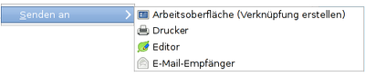

Senden an
Dieser Artikel wurde für die folgenden Ubuntu-Versionen getestet:
Dieser Artikel ist größtenteils für alle Ubuntu-Versionen gültig.
Zum Verständnis dieses Artikels sind folgende Seiten hilfreich:
 Thunar enthält von Haus aus eine "Senden an"-Funktion im Kontextmenü
Thunar enthält von Haus aus eine "Senden an"-Funktion im Kontextmenü  , die bei anderen Dateimanagern entweder erst nachinstalliert werden muss oder gar nicht vorhanden ist. Diese Funktion lässt sich, wie vieles andere in Xfce, sehr einfach erweitern. Dafür sind lediglich entsprechende .desktop-Dateien anzulegen. Je nachdem, welchen Gültigkeitsbereich eigene Ergänzungen haben sollen, müssen die Dateien in folgenden Ordnern abgespeichert werden:
, die bei anderen Dateimanagern entweder erst nachinstalliert werden muss oder gar nicht vorhanden ist. Diese Funktion lässt sich, wie vieles andere in Xfce, sehr einfach erweitern. Dafür sind lediglich entsprechende .desktop-Dateien anzulegen. Je nachdem, welchen Gültigkeitsbereich eigene Ergänzungen haben sollen, müssen die Dateien in folgenden Ordnern abgespeichert werden:
~/.local/share/Thunar/sendto/ (aktueller Benutzer)
/usr/share/Thunar/sendto/ (systemweit; Root-Rechte erforderlich)
 Funktionsweise, Inhalt und Struktur dieser Programmstarter werden im Artikel .desktop-Dateien ausführlich erläutert. Die nachfolgenden Beispiele können mit einem beliebigen Editor [1] erstellt werden, der Dateiname der jeweiligen .desktop-Datei ist frei wählbar.
Beispiele¶
Editor¶
Das folgende Beispiel "Senden an Editor" verwendet Leafpad. Man kann auch andere Editoren eintragen.
edit.desktop:
[Desktop Entry] Version=1.0 Type=Application Encoding=UTF-8 Name=Editor Exec=leafpad %f Icon=leafpad
Man sollte auf den Unterschied zwischen den Parametern %f und %F achten. Ein kleines f steht für eine einzelne Datei, ein großes F für alle markierten Dateien (siehe nächstes Beispiel). Weitere Parameter sind dem Thunar-Menüpunkt "Bearbeiten -> Benutzerdefinierte Aktionen... -> Bearbeiten" entnommen und in der nachfolgenden Tabelle aufgeführt.
| Platzhalter in Thunar | |
| Parameter | Funktion |
%f | Pfad und Name der ersten ausgewählten Datei |
%F | Pfade und Namen aller ausgewählten Dateien |
%d | Ordner der ersten ausgewählten Datei (aus "%f") |
%D | Ordner aller ausgewählter Dateien (aus "%F") |
%n | der erste ausgewählte Dateiname (ohne Pfad) |
%N | die ausgewählten Dateinamen (ohne Pfade) |
Siehe auch The Exec key  .
.
Drucken¶
"Senden an Drucker" schickt markierte Dateien an den Standard-Drucker und enthält als Besonderheit die Definition von MIME-Typen.
print.desktop:
[Desktop Entry] Version=1.0 Type=Application Encoding=UTF-8 Name=Default Printer Name[de]=Standard-Drucker Exec=lp -o media=a4 %F Icon=printer MimeType=text/plain;text/txt;text/html;
Bei der Verwendung muss beachtet werden, ob sich eine Datei überhaupt direkt drucken lässt. Beispiel: Angewendet auf eine HTML-Datei mit dem MIME-Typ text/html druckt der Befehl den Quelltext, nicht die im Browser darzustellende Seite. Die gleiche Problematik gibt es auch bei PDF-Dateien.
Ebenfalls schwierig kann sich der Ausdruck von Bildern gestalten. Hier müsste man den Befehl lp -o fitplot %F benutzen, damit große Bilder auf eine Seite gedruckt werden – was wiederum bei längeren Textdateien eher ungünstig ist. Praktisch muss man also zwei .desktop-Dateien mit unterschiedlichen MIME-Typen anlegen, falls man Bilder auf diesem Weg drucken möchte.
Hinweis:
Mit /usr/share/Thunar/sendto/xfprint.desktop gibt es unter Xubuntu 12.04 bereits einen ähnlichen Eintrag, der xfprint4 statt lp verwendet. Leider taucht dieser nicht im "Senden an"-Menü auf. Der simple Grund: in der Standard-Installation von Xubuntu ist das Paket xfprint4 nicht mehr enthalten (1061846).
Dropbox¶
Die folgenden Beispiele kopieren ausgewählte Dateien in den (öffentlichen) Dropbox-Ordner (BENUTZERNAME anpassen):
Dateien in den Ordner ~/Dropbox/ kopieren:
[Desktop Entry] Type=Application Version=1.0 Encoding=UTF-8 Name=Dropbox Name[de]=Dropbox-Ordner Exec=cp -dr %F /home/BENUTZERNAME/Dropbox/%F Icon=dropbox
Dateien in den Ordner ~/Dropbox/Public/ kopieren:
[Desktop Entry] Type=Application Version=1.0 Encoding=UTF-8 Name=Dropbox Public Name[de]=öffentlicher Dropbox-Ordner Exec=cp -dr %F /home/BENUTZERNAME/Dropbox/Public/%F Icon=dropbox
Wer Dateien lieber verschieben (nicht kopieren) möchte, könnte cp beispielsweise durch den Befehl mmv ersetzen (ungetestet).
Ordner oder Dateien vergleichen¶
Mit Hilfe von Meld kann man nicht nur Textdateien, sondern auch komplette Ordner vergleichen.
compare.desktop:
[Desktop Entry] Type=Application Version=1.0 Encoding=UTF-8 Exec=meld %F Icon=meld Name[de]=Ordner oder Dateien vergleichen
Festplattenbelegung analysieren¶
Mit diesem Eintrag kann man die Festplattenbelegung von Ordnern und Dateien analysieren. Voraussetzung ist das Programm Baobab.
baobab.desktop:
[Desktop Entry] Type=Application Version=1.0 Encoding=UTF-8 Exec=baobab %F Icon=baobab Name[de]=Festplattenbelegung analysieren
Probleme und Lösungen¶
Ist Xubuntu in der Version Artful Aardvark als 32-Bit-Version installiert, so ist Thunar der dazugehörige Dateimanager. Hier gibt es ein Problem mit "senden an". Wird über das Kontextmenü "senden an E-Mail_Empfänger" ausgewählt, erscheint eine Hinweisbox mit der Meldung:
Das vorgegebene E-Mail-Programm konnte nicht gestartet werden. ''Kindprozess /usr/lib/x86_64-linux-gnu/xfce4/exo-1/exo-compose-mail-1 konnte nicht ausgeführt werden, Datei oder Verzeichnis nicht gefunden.
Schuld ist eine fehlende oder fehlerhafte Verknüpfung. Mit dem Befehl
sudo ln -s /usr/lib/i386-linux-gnu/xfce4 /usr/lib/x86_64-linux-gnu/xfce4
wird eine Verknüpfung angelegt, die das Problem behebt.
Links¶
The "Send To" Menu
- Thunar-WikiHOWTO: Add folder destinations to the Thunar sendto action
- Crunchbang ForumThunar
 Hauptartikel
HauptartikelThunar/Benutzerdefinierte Aktionen - eigene Funktionen ergänzen
- Erstellt mit Inyoka
-
 2004 – 2017 ubuntuusers.de • Einige Rechte vorbehalten
2004 – 2017 ubuntuusers.de • Einige Rechte vorbehalten
Lizenz • Kontakt • Datenschutz • Impressum • Serverstatus -
Serverhousing gespendet von